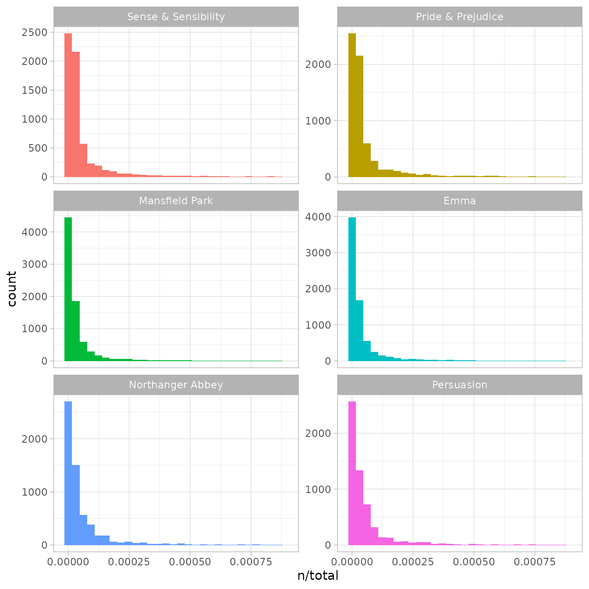

vignettes/tf_idf.Rmd
tf_idf.RmdA central question in text mining and natural language processing is how to quantify what a document is about. Can we do this by looking at the words that make up the document? One measure of how important a word may be is its term frequency (tf), how frequently a word occurs in a document. There are words in a document, however, that occur many times but may not be important; in English, these are probably words like “the”, “is”, “of”, and so forth. We might take the approach of adding words like these to a list of stop words and removing them before analysis, but it is possible that some of these words might be more important in some documents than others. A list of stop words is not a sophisticated approach to adjusting term frequency for commonly used words.
Another approach is to look at a term’s inverse document frequency (idf), which decreases the weight for commonly used words and increases the weight for words that are not used very much in a collection of documents. This can be combined with term frequency to calculate a term’s tf-idf, the frequency of a term adjusted for how rarely it is used. It is intended to measure how important a word is to a document in a collection (or corpus) of documents. It is a rule-of-thumb or heuristic quantity; while it has proved useful in text mining, search engines, etc., its theoretical foundations are considered less than firm by information theory experts. The inverse document frequency for any given term is defined as
\[idf(\text{term}) = \ln{\left(\frac{n_{\text{documents}}}{n_{\text{documents containing term}}}\right)}\]
We can use tidy data principles, as described in the main vignette, to approach tf-idf analysis and use consistent, effective tools to quantify how important various terms are in a document that is part of a collection.
Let’s look at the published novels of Jane Austen and examine first
term frequency, then tf-idf. We can start just by using dplyr verbs such
as group_by and join. What are the most
commonly used words in Jane Austen’s novels? (Let’s also calculate the
total words in each novel here, for later use.)
library(dplyr)
library(janeaustenr)
library(tidytext)
book_words <- austen_books() %>%
unnest_tokens(word, text) %>%
count(book, word, sort = TRUE)
total_words <- book_words %>% group_by(book) %>% summarize(total = sum(n))
book_words <- left_join(book_words, total_words)
book_words## # A tibble: 40,379 × 4
## book word n total
## <fct> <chr> <int> <int>
## 1 Mansfield Park the 6206 160460
## 2 Mansfield Park to 5475 160460
## 3 Mansfield Park and 5438 160460
## 4 Emma to 5239 160996
## 5 Emma the 5201 160996
## 6 Emma and 4896 160996
## 7 Mansfield Park of 4778 160460
## 8 Pride & Prejudice the 4331 122204
## 9 Emma of 4291 160996
## 10 Pride & Prejudice to 4162 122204
## # … with 40,369 more rowsThe usual suspects are here, “the”, “and”, “to”, and so forth. Let’s
look at the distribution of n/total for each novel, the
number of times a word appears in a novel divided by the total number of
terms (words) in that novel. This is exactly what term frequency is.
library(ggplot2)
ggplot(book_words, aes(n/total, fill = book)) +
geom_histogram(show.legend = FALSE) +
scale_x_continuous(limits = c(NA, 0.0009)) +
facet_wrap(vars(book), ncol = 2, scales = "free_y")
There are very long tails to the right for these novels (those extremely common words!) that we have not shown in these plots. These plots exhibit similar distributions for all the novels, with many words that occur rarely and fewer words that occur frequently. The idea of tf-idf is to find the important words for the content of each document by decreasing the weight for commonly used words and increasing the weight for words that are not used very much in a collection or corpus of documents, in this case, the group of Jane Austen’s novels as a whole. Calculating tf-idf attempts to find the words that are important (i.e., common) in a text, but not too common. Let’s do that now.
book_words <- book_words %>%
bind_tf_idf(word, book, n)
book_words## # A tibble: 40,379 × 7
## book word n total tf idf tf_idf
## <fct> <chr> <int> <int> <dbl> <dbl> <dbl>
## 1 Mansfield Park the 6206 160460 0.0387 0 0
## 2 Mansfield Park to 5475 160460 0.0341 0 0
## 3 Mansfield Park and 5438 160460 0.0339 0 0
## 4 Emma to 5239 160996 0.0325 0 0
## 5 Emma the 5201 160996 0.0323 0 0
## 6 Emma and 4896 160996 0.0304 0 0
## 7 Mansfield Park of 4778 160460 0.0298 0 0
## 8 Pride & Prejudice the 4331 122204 0.0354 0 0
## 9 Emma of 4291 160996 0.0267 0 0
## 10 Pride & Prejudice to 4162 122204 0.0341 0 0
## # … with 40,369 more rowsNotice that idf and thus tf-idf are zero for these extremely common words. These are all words that appear in all six of Jane Austen’s novels, so the idf term (which will then be the natural log of 1) is zero. The inverse document frequency (and thus tf-idf) is very low (near zero) for words that occur in many of the documents in a collection; this is how this approach decreases the weight for common words. The inverse document frequency will be a higher number for words that occur in fewer of the documents in the collection. Let’s look at terms with high tf-idf in Jane Austen’s works.
## # A tibble: 40,379 × 6
## book word n tf idf tf_idf
## <fct> <chr> <int> <dbl> <dbl> <dbl>
## 1 Sense & Sensibility elinor 623 0.00519 1.79 0.00931
## 2 Sense & Sensibility marianne 492 0.00410 1.79 0.00735
## 3 Mansfield Park crawford 493 0.00307 1.79 0.00551
## 4 Pride & Prejudice darcy 373 0.00305 1.79 0.00547
## 5 Persuasion elliot 254 0.00304 1.79 0.00544
## 6 Emma emma 786 0.00488 1.10 0.00536
## 7 Northanger Abbey tilney 196 0.00252 1.79 0.00452
## 8 Emma weston 389 0.00242 1.79 0.00433
## 9 Pride & Prejudice bennet 294 0.00241 1.79 0.00431
## 10 Persuasion wentworth 191 0.00228 1.79 0.00409
## # … with 40,369 more rowsHere we see all proper nouns, names that are in fact important in these novels. None of them occur in all of novels, and they are important, characteristic words for each text. Some of the values for idf are the same for different terms because there are 6 documents in this corpus and we are seeing the numerical value for \(\ln(6/1)\), \(\ln(6/2)\), etc. Let’s look specifically at Pride and Prejudice.
## # A tibble: 6,538 × 6
## book word n tf idf tf_idf
## <fct> <chr> <int> <dbl> <dbl> <dbl>
## 1 Pride & Prejudice darcy 373 0.00305 1.79 0.00547
## 2 Pride & Prejudice bennet 294 0.00241 1.79 0.00431
## 3 Pride & Prejudice bingley 257 0.00210 1.79 0.00377
## 4 Pride & Prejudice elizabeth 597 0.00489 0.693 0.00339
## 5 Pride & Prejudice wickham 162 0.00133 1.79 0.00238
## 6 Pride & Prejudice collins 156 0.00128 1.79 0.00229
## 7 Pride & Prejudice lydia 133 0.00109 1.79 0.00195
## 8 Pride & Prejudice lizzy 95 0.000777 1.79 0.00139
## 9 Pride & Prejudice longbourn 88 0.000720 1.79 0.00129
## 10 Pride & Prejudice gardiner 84 0.000687 1.79 0.00123
## # … with 6,528 more rowsThese words are, as measured by tf-idf, the most important to Pride and Prejudice and most readers would likely agree.